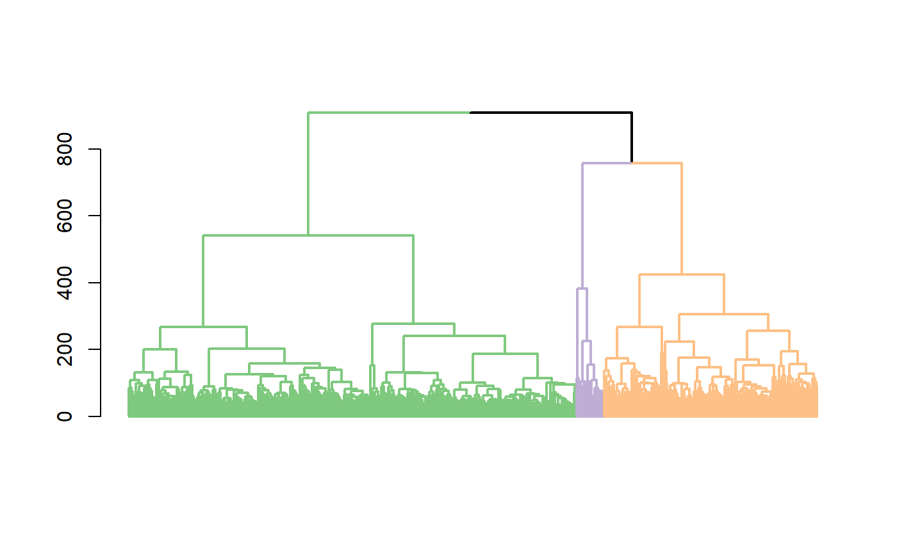

plot one single tree with the optimal clustering result
plot_optimal_CORE.Rdafter an optimal cluster has been identified, users may use this function to plot the resulting dendrogram with the branch colors represent clutering results
plot_optimal_CORE(original_tree, optimal_cluster = NULL, shift = -100, values = NULL)
Arguments
| original_tree | a dendrogram object |
|---|---|
| optimal_cluster | a vector of cluster IDs for cells in the dendrogram |
| shift | a numer specifying the gap between the dendrogram and the colored |
| values | a vector containing color values of the branches and the colored bar underneath the tree bar underneath the dendrogram. This parameter allows better selection of colors for the display. |
Value
a plot with colored braches and bars for the optimal clustering result
Examples
day5 <- sample2 mixedpop2 <-NewscGPS_SME(ExpressionMatrix = day5$dat5_counts, GeneMetadata = day5$dat5geneInfo, CellMetadata = day5$dat5_clusters) cluster_all <-clustering_scGPS(object=mixedpop2)#> [1] "Performing 1 round of filtering" #> [1] "Identifying top variable genes" #> [1] "Calculating distance matrix" #> [1] "Performing hierarchical clustering" #> [1] "Finding clustering information" #> [1] "No more outliers detected in filtering round 1" #> [1] "Identifying top variable genes" #> [1] "Calculating distance matrix" #> [1] "Performing hierarchical clustering" #> [1] "Finding clustering information" #> [1] "writing clustering result for run 1" #> [1] "writing clustering result for run 2" #> [1] "writing clustering result for run 3" #> [1] "writing clustering result for run 4" #> [1] "writing clustering result for run 5" #> [1] "writing clustering result for run 6" #> [1] "writing clustering result for run 7" #> [1] "writing clustering result for run 8" #> [1] "writing clustering result for run 9" #> [1] "writing clustering result for run 10" #> [1] "writing clustering result for run 11" #> [1] "writing clustering result for run 12" #> [1] "writing clustering result for run 13" #> [1] "writing clustering result for run 14" #> [1] "writing clustering result for run 15" #> [1] "writing clustering result for run 16" #> [1] "writing clustering result for run 17" #> [1] "writing clustering result for run 18" #> [1] "writing clustering result for run 19" #> [1] "writing clustering result for run 20" #> [1] "writing clustering result for run 21" #> [1] "writing clustering result for run 22" #> [1] "writing clustering result for run 23" #> [1] "writing clustering result for run 24" #> [1] "writing clustering result for run 25" #> [1] "writing clustering result for run 26" #> [1] "writing clustering result for run 27" #> [1] "writing clustering result for run 28" #> [1] "writing clustering result for run 29" #> [1] "writing clustering result for run 30" #> [1] "writing clustering result for run 31" #> [1] "writing clustering result for run 32" #> [1] "writing clustering result for run 33" #> [1] "writing clustering result for run 34" #> [1] "writing clustering result for run 35" #> [1] "writing clustering result for run 36" #> [1] "writing clustering result for run 37" #> [1] "writing clustering result for run 38" #> [1] "writing clustering result for run 39" #> [1] "writing clustering result for run 40" #> [1] "Done clustering, moving to stability calculation..."stab_df <- FindStability(list_clusters=cluster_all$list_clusters, cluster_ref = cluster_all$cluster_ref)#> [1] "Done calculating stability..."optimal_stab <- FindOptimalStability(list_clusters = cluster_all, stab_df)#> [1] "Start finding optimal clustering..." #> [1] "Done finding optimal clustering..."CORE_cluster <- CORE_scGPS(mixedpop2, remove_outlier = c(0))#> [1] "Performing 1 round of filtering" #> [1] "Identifying top variable genes" #> [1] "Calculating distance matrix" #> [1] "Performing hierarchical clustering" #> [1] "Finding clustering information" #> [1] "No more outliers detected in filtering round 1" #> [1] "Identifying top variable genes" #> [1] "Calculating distance matrix" #> [1] "Performing hierarchical clustering" #> [1] "Finding clustering information" #> [1] "writing clustering result for run 1" #> [1] "writing clustering result for run 2" #> [1] "writing clustering result for run 3" #> [1] "writing clustering result for run 4" #> [1] "writing clustering result for run 5" #> [1] "writing clustering result for run 6" #> [1] "writing clustering result for run 7" #> [1] "writing clustering result for run 8" #> [1] "writing clustering result for run 9" #> [1] "writing clustering result for run 10" #> [1] "writing clustering result for run 11" #> [1] "writing clustering result for run 12" #> [1] "writing clustering result for run 13" #> [1] "writing clustering result for run 14" #> [1] "writing clustering result for run 15" #> [1] "writing clustering result for run 16" #> [1] "writing clustering result for run 17" #> [1] "writing clustering result for run 18" #> [1] "writing clustering result for run 19" #> [1] "writing clustering result for run 20" #> [1] "writing clustering result for run 21" #> [1] "writing clustering result for run 22" #> [1] "writing clustering result for run 23" #> [1] "writing clustering result for run 24" #> [1] "writing clustering result for run 25" #> [1] "writing clustering result for run 26" #> [1] "writing clustering result for run 27" #> [1] "writing clustering result for run 28" #> [1] "writing clustering result for run 29" #> [1] "writing clustering result for run 30" #> [1] "writing clustering result for run 31" #> [1] "writing clustering result for run 32" #> [1] "writing clustering result for run 33" #> [1] "writing clustering result for run 34" #> [1] "writing clustering result for run 35" #> [1] "writing clustering result for run 36" #> [1] "writing clustering result for run 37" #> [1] "writing clustering result for run 38" #> [1] "writing clustering result for run 39" #> [1] "writing clustering result for run 40" #> [1] "Done clustering, moving to stability calculation..." #> [1] "Done calculating stability..." #> [1] "Start finding optimal clustering..." #> [1] "Done finding optimal clustering..."plot_CORE(CORE_cluster$tree, CORE_cluster$Cluster)key_height <- CORE_cluster$optimalClust$KeyStats$Height optimal_res <- CORE_cluster$optimalClust$OptimalRes optimal_index = which(key_height == optimal_res) plot_optimal_CORE(original_tree= CORE_cluster$tree, optimal_cluster = unlist(CORE_cluster$Cluster[optimal_index]), shift = -2000)#> [1] "Ordering and assigning labels..." #> [1] 2 #> [1] 128 270 NA #> [1] 3 #> [1] 128 270 393 #> [1] "Plotting the colored dendrogram now...."#> [1] "Plotting the bar underneath now...."